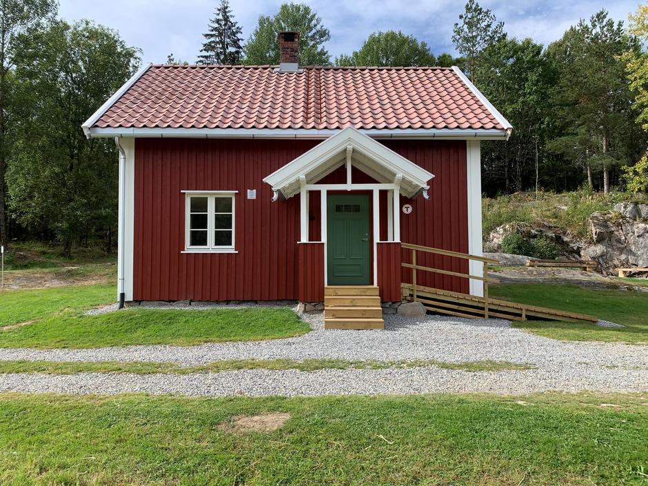
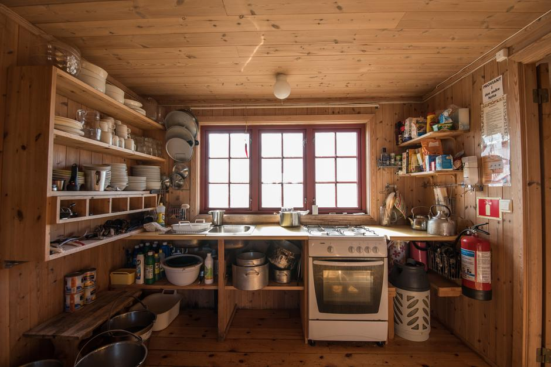
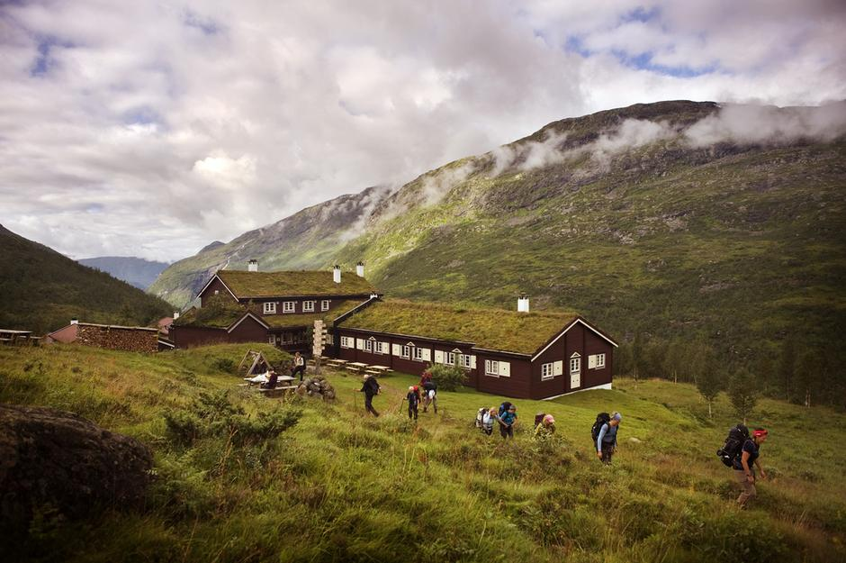
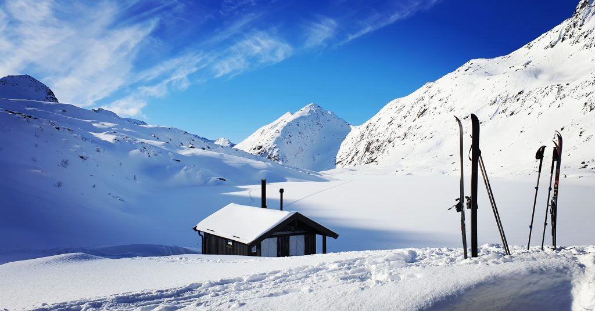

Velkommen til våre hytter
Turistforeningshyttene er kjent for sin uformelle og koselige stemning. På de betjente hyttene ønsker trivelig vertskap velkommen med treretters middag og gode samtaler med andre fjellfolk rundt peisbålet. På de selvbetjente og ubetjente hyttene er det ekstra sosialt når man samarbeider med andre gjester om å hente vann, fyre i ovnen, lage mat og vaske opp.
Ubetjent hytte
Dette er små hytter (5–25 sengeplasser) samt ofte sikringsbu med ekstraplasser. Hyttene er utstyrt med senger og dyner (på enkelte kun tepper), kokemuligheter med kjeler, dekketøy og ved. Hyttene er åpne eller låst med DNTs standardnøkkel.
Selvbetjent hytte
Som ubetjent hytte, men med et rikholdig matvarelager med middagsretter, pålegg, knekkebrød og lignende, som kan kjøpes på hytta. Hyttene er åpne eller låst med DNTs standardnøkkel, og kan ha hyttevakt i sesongene.
Betjent hytte
Disse drives av et vertskap. Servering av måltider (ofte trerettersmiddag samt vin/øl-rettigheter) og overnatting på to- til firemannsrom eller sovesal. De fleste hyttene har enkel, god standard med strøm, dusj og tørkerom for turtøy. Flere av de betjente hyttene har et ubetjent eller selvbetjent tilbud utenfor sesong.



Ofte stilte spørsmål
Hvem kan bruke hyttene?
Alle kan bruke DNTs hytter. Ingen avvises selv om hytta er full. På hytter uten vertskap må minst én i følget være medlem for å få leid den spesielle DNT-nøkkelen. Noen hytter er tilrettelagt for at du kan ta med hund, andre ikke. På UT.no kan du sjekke hvordan forholdene er på hver enkelt hytte.
Må jeg bestille plass?
Du trenger ikke bestille plass før du kommer til en hytte. Sjekk bare at hytta er åpen. Åpningstidene finner du på UT.no. Skal du imidlertid overnatte på en betjent hytte i to eller flere dager, er det lurt å bestille plass. Det gjør du ved å ringe eller sende e-post til hytta.
Er hyttene låst?
De aller fleste av hyttene som ikke har betjening er låst med DNTs standardnøkkel. Derfor er det en god regel å alltid ha med seg denne lille nøkkelen i sekken når du skal på tur. Medlemmer kan låne nøkkelen mot et depositum på 100 kroner. Merk at enkelte hytter har egne låser som krever spesialnøkkel. Sjekk detaljer for hytta du skal besøke på UT.no.
Bestill nøkkelen i vår nettbutikk. Du kan også kjøpe nøkkelen via våre lokale turistforeninger/turlag, samt enkelte turistkontorer og butikker.
Når er hyttene åpne?
De selv- og ubetjente hyttene er ofte helårsåpne, med unntak for enkelte som stenger i den kaldeste vinterperioden, samt noen i kalvingsperioden for reinsdyr i mai/juni. Noen hytter stenger også i jaktperioden på høsten.
Enkelte betjente hytter er åpne fra slutten av februar til langt ut i mai, mens de fleste åpner fredag før palmesøndag og stenger igjen 2. påskedag. Fra slutten av juni til midten av september er de aller fleste hyttene åpne. Haukeliseter ved E134 over Haukelifjell og Preikestolen Fjellstue er helårsåpne.
Mange av de betjente hyttene har selvbetjeningskvarter utenom den betjente sesongen.
Sjekk alltid åpningstidene for de enkelte hyttene på UT.no før du drar på tur!
Hva koster det å bo på hyttene?
Et opphold på ei turistforeningshytte koster alt fra 100–250 kroner for overnatting på ubetjent hytte, til rundt 800 kroner for full pensjon på betjente hytter (medlemspris). Et opphold på en betjent hytte blir rimeligere hvis du overnatter på større rom eller sovesal.
Sjekk prislisten for DNT Oslo og Omegns hytter i de største fjellområdene i Sør-Norge. Vær oppmerksom på at turistforeningshytter andre steder i landet kan ha andre priser. Priser for de enkelte hyttene kan du finne på UT.no.
Som medlem i DNT får du rabatt på overnatting på alle DNT-hyttene. Medlemmer i DNT ung får halv pris på overnatting, mens medlemmer i Barnas Turlag overnatter gratis på de fleste selvbetjente og ubetjente hyttene, og får ekstra rabatt på betjente hytter.
På betjente hytter kan du få tilbud om Fast opphold-spesialpris hvis du vil bo fast i noen dager. Prisen dekker overnatting og mat, samt sengetøy og eget rom. Dermed kan du gå dagsturer med lett sekk og slippe å lure på hvor du skal sove.
Kan jeg ta med hund på hyttene?
Noen hytter er tilrettelagt for at du kan ta med hund, med egne hunderom eller hundebur. På andre hytter må hunden ligge ute eller få henvist plass i uterom, vedskjul etc. Hunder har normalt ikke adgang til soverom, oppholdsrom eller spiserom. Dette er blant annet av hensyn til allergikere.
Se oversikt over hytter som er tilrettelagt for hund på UT.no
